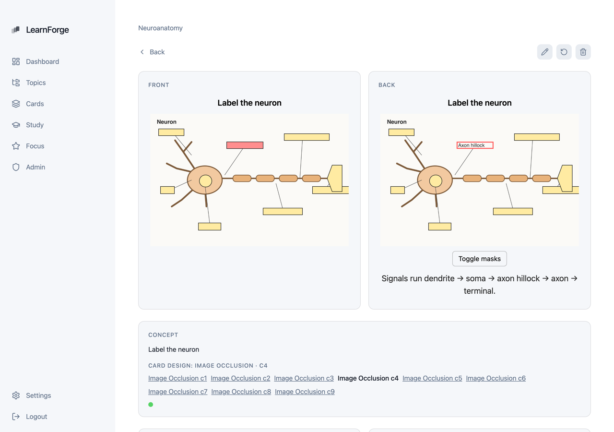
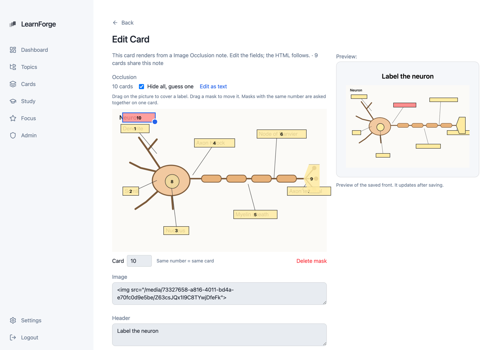
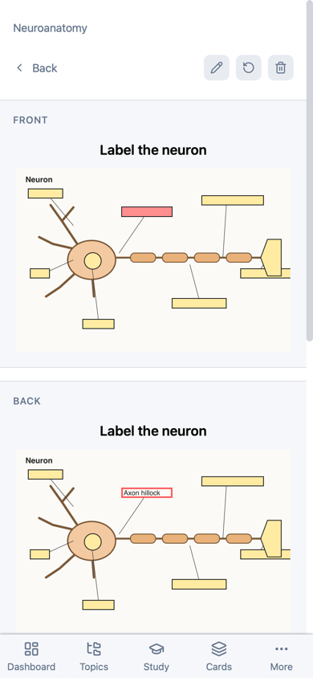
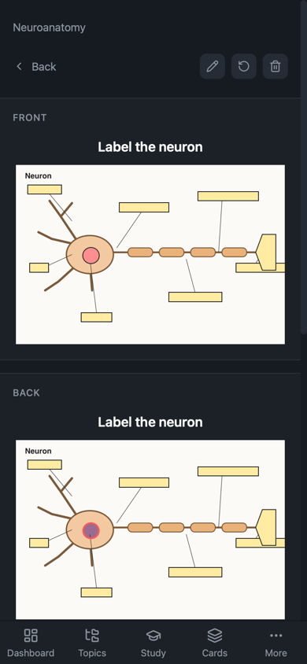
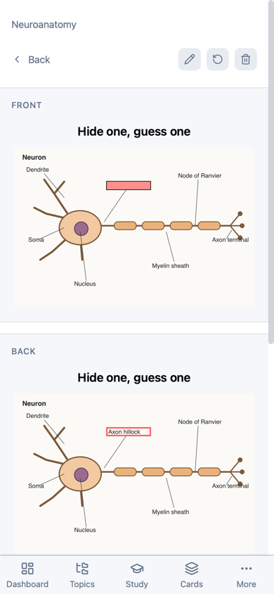
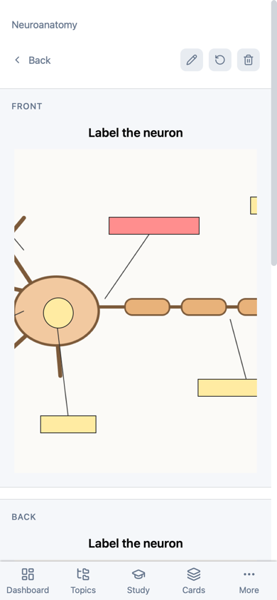
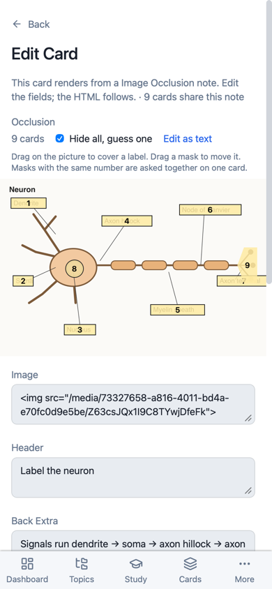
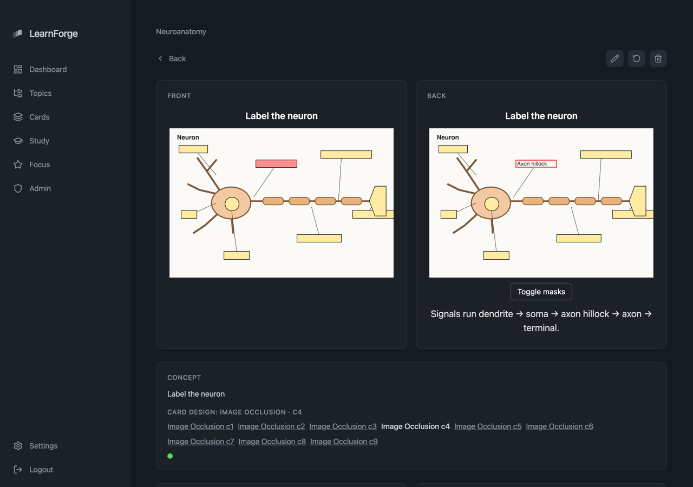

A figure with labels covered, one card per covered label. Stored in Anki's own format, so Anki imports, Lecture Scribe uploads and a later .apkg export all speak the same note. Parts 1–5 of the brief are built; nothing is merged or deployed.
Built-in occlusion ("Image Occlusion"), kind cloze, fields Occlusion, Image, Header, Back Extra, Comments. {{cloze:Occlusion}} renders each shape as a positioned <div> with Anki's classes and data attributes. Pure CSS percentages: scales at any width, no canvas. Rect, ellipse, polygon, text labels, rotation, oi=1. Tap to zoom 2×, "Toggle masks" on the back.
Anki IO notes land on the built-in type (fields by name, else Anki's stock order) with their media; cards are studyable, Anki's own suspension kept. A boot migration moves notes an older import left as unsupported onto the built-in type, keeps schedules, deletes the copied type. A re-import does the same.
POST /notes donenote_type: "occlusion" works with the lfa_ app token (route was already allowed). Validation: picture present, known shapes, fractions not pixels, at least one asked shape. source_ref idempotency as for every note.
Occlusion cards are served as type: "card", never sent to the question writer (/tutor/prepare and /tutor/next). Study cards carry noteTypeKey. The chat tutor's skill gets a short rule not to spoil the unmasked picture.
On the card editor of an occlusion note: drag to draw a rectangle, drag to move, corner handle resizes, number field groups masks into cN, delete, "hide all, guess one", raw-text fallback. Full-bleed at phone width.
Full text: docs/image-occlusion-contract.md. Verified against Anki's source (rslib/src/cloze.rs, image_occlusion/imageocclusion.rs, ts/routes/image-occlusion) and the note exported by Anki 26.09.3 in tests/fixtures/anki/occlusion.apkg.
POST /notes (Authorization: Bearer lfa_…)
{ "topic_id": "…", "note_type": "occlusion", "source_ref": "scribe:lecture-3:slide-14:io",
"fields": {
"Occlusion": "{{c1::image-occlusion:rect:left=.3762:top=.52:width=.114:height=.052:oi=1}}<br>{{c2::image-occlusion:ellipse:left=.1:top=.7:rx=.05:ry=.04:oi=1}}",
"Image": "<img src=\"/images/<uuid from POST /images>\">",
"Header": "Brachial plexus — slide 14", "Back Extra": "Lecture 3" } }







| Suite | Covers |
|---|---|
38-image-occlusion | Parser (Anki's escape test case, write-back round trip), card numbers (labels c0 make no card), rendering classes/percentages/rotation/polygon offset/escaping, validation; app-token POST /notes with two cards and source_ref; edit adds/suspends cards; 400s; tutor serves the card and writes no question. |
33-anki-import | Anki 26.09 IO package lands on the built-in type, media rewritten, no suspension, studyable, re-import unchanged (replaces the old "kept out of study" test). |
39-occlusion-migration | Old-style imported IO note written by SQL, API restarted: note moved, fields mapped, schedule kept, Anki-suspended card stays suspended, copied type deleted, anki_records repointed. |
Full suite with embeddings off: 623 passed, 3 skipped, 1 failed — 22-cloze-study-flow "similar cards via embedding", which needs the embedding model. 38 and 39 rerun green after the review fixes (migration frees cards only after they render; the editor keeps {{c1,2::…}}). Lint gate: tsc and eslint clean on core, api, mcp, web-ui (one existing warning in StudySessionPage).
cloze; the built-in key tells occlusion apart (noteTypeKey). No third kind rippling through the code.POST /notes refuses them.ensureBuiltinTypes is the place to add a CSS refresh for uncustomized built-ins.originalStockKind 6) around them.card-media.ts for occlusion fronts, so Claude in chat can show exactly the asked region.